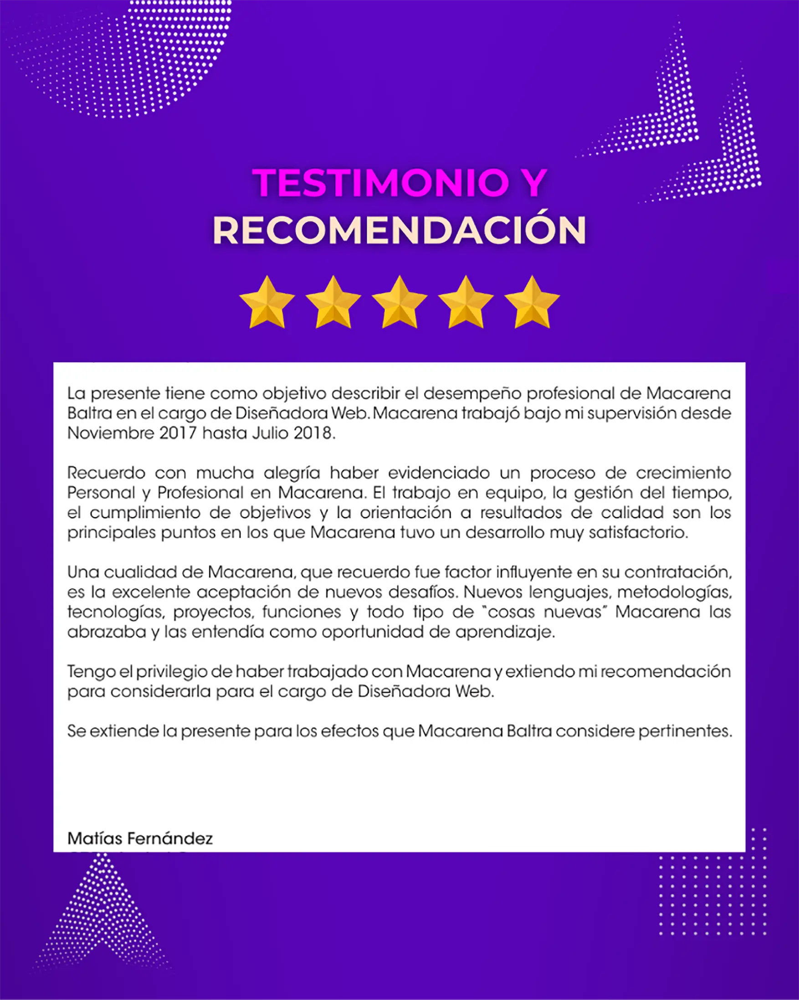

Detalles del proyecto
Herramientas utilizadas
Colaboradores/Stakeholders
Contexto
FOL operaba con tres equipos produciendo piezas visuales de forma independiente — Marketing, TI y partners externos con convenio. Sin un sistema de referencia compartido, cada área aplicaba colores, tipografías e iconografía de manera distinta. El resultado: una marca fragmentada que perdía coherencia en cada punto de contacto con el cliente.
Desafío
Diseñar y documentar un Brand System completo y un UI Kit que cualquier perfil — técnico o no — pudiera usar desde el primer día, sin depender del diseñador para cada pieza. El entregable tenía que funcionar para TI construyendo la web, Marketing produciendo campañas y partners externos generando material de convenios.
Empresa/Cliente: FOL Agencia de Valores SpA
Proceso y Aprendizajes
Buyer personas & user journeys internos: Antes de diseñar un solo componente, identifiqué los usuarios reales del sistema: TI, Marketing, Ventas, Información y diseñadores colaboradores externos. Mapeé cómo cada perfil interactuaba con la marca en su trabajo diario — qué producían, con qué frecuencia y dónde aparecían las inconsistencias.
Shadowing & task flows: Acompañé a cada equipo en sus tareas reales, documentando sus flujos de trabajo y detectando los puntos de fricción concretos — archivos duplicados, colores incorrectos aplicados por falta de referencia, tiempo perdido buscando assets.
Arquitectura del Design System: Estructuré el sistema desde sus fundamentos: tokens de estilo (colores HEX/RGB, tipografías, iconografía), reglas de composición, componentes de UI y patrones de uso. Cada decisión quedó documentada con el por qué — no solo el qué.
UI Kit + snippets CSS/Bootstrap: Diseñé los componentes en Illustrator e incluí fragmentos de CSS y Bootstrap listos para integrar en la plataforma, eliminando la traducción entre diseño y desarrollo.
Workshops de validación e iteración: Facilité sesiones con TI y Marketing para iterar en ciclos cortos — presenté prototipos, recibí feedback, incorporé cambios. Adapté el lenguaje según el perfil de cada participante para asegurar comprensión sin tecnicismos.
Manual de marca en PDF: Entregué un documento completo con ejemplos de aplicación en web, presentaciones y material impreso — con tutorial paso a paso para que cualquier persona pudiera configurar e integrar los elementos sin conocimientos técnicos previos.
Resultados
50% menos tiempo en producción de assets — medido a los 2 meses mediante seguimiento interno de entregables por sprint.
Producción duplicada en el mismo período — antes del sistema, los equipos producían 2 entregables por ciclo. Después, lograron el doble manteniendo la coherencia visual.
Onboarding acelerado — cada nuevo integrante aprendió la identidad de marca en minutos, no en semanas.
Adopción inmediata desde el día uno — TI y Marketing usaron el sistema como referencia única sin período de transición ni capacitaciones adicionales.
Escalabilidad real — el sistema absorbió nuevas piezas y canales sin romper la coherencia, sosteniendo el crecimiento de la marca en el tiempo.
Enfoque UX Architect & Graphic Design
Como Graphic Designer diseñé el manual de marca en PDF — compartida por correo, accesible para todos los equipos sin necesidad de software especializado. Incluí ejemplos de aplicación en web, presentaciones y material impreso, junto con fragmentos de CSS y Bootstrap listos para integrar. Facilité workshops ágiles con TI y Marketing para iterar rápido: ajustamos botones, tarjetas y banners en ciclos cortos hasta llegar a un sistema que todos podían usar con confianza.
Como UX Architectestructuré el Design System desde sus fundamentos — tokens de estilo, reglas de composición y arquitectura de componentes documentada en Illustrator. Cada decisión de diseño quedó justificada y registrada para que el sistema pudiera crecer sin perder coherencia, sin importar quién lo usara o en qué canal.
El resultado fue un cierre de proyecto sin revisiones por color, sin assets duplicados y sin dependencia del diseñador para cada pieza nueva.
Testimonios & Referencias
Carta de recomendación formal emitida por el Gerente de TI de FOL al cierre del proyecto — disponible para reclutadores que la soliciten.
-

Nov 2017 – Mar 2019 |Dependiente
Carta de Recomendación“El trabajo en equipo, la gestión del tiempo, el cumplimiento de objetivos y la orientación a resultados de calidad… Macarena abrazaba todo tipo de ‘cosas nuevas’ como oportunidades de aprendizaje.”
Matías Fernández
Gerente de TI en FOL Agencia de Valores SpA
Nov 2017 – Mar 2019 · Rol dependiente en equipo interno.
Rol: Graphic Designer & UX Architect — Design System, UI Kit y prototipado front-end.